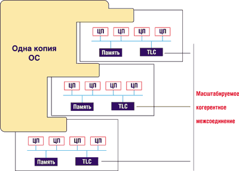
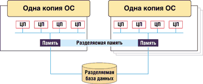
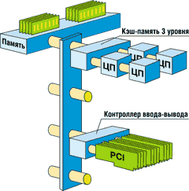
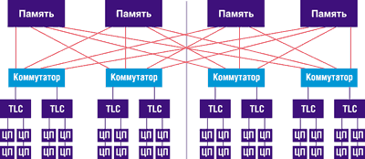

Андрей Борзенко
Основные факторы, влияющие на возможности программных приложений, - это не только структура самого приложения, но и возможности ОС, а также способность аппаратной платформы их поддерживать. В настоящее время растет интерес к приложениям, которые могут одновременно выполняться на нескольких процессорах. Если приложение удается разбить на ряд взаимодействующих параллельных процессов, это позволяет повысить эффективность выполнения задачи. Примерами специализированных приложений такого рода могут служить параллельные научные приложения, поисковые машины и машины формирования запросов, а также продукты для оперативной обработки транзакций (OLTP). Эти приложения могут сильно различаться, но у них есть общие особенности - им требуется совместный доступ к статичным данным, и они должны синхронизировать управляющие данные, например, очереди входной и выходной информации. Кроме того, приложение для обработки транзакций должно синхронизировать большие объемы обновлений записей баз данных, журналов работы, аудита и т. п. Минимизация узких мест в таких приложениях лежит на плечах разработчика ПО. Например, чтобы предотвратить конфликты, необходимо проводить синхронизацию с достаточно низкой степенью детализации, а индивидуальные процессы должны иметь достаточный запас прочности, чтобы избежать перегрузки своих узлов.
ОС выполняется на всех процессорах системы, и у нее имеются сходные потребности в доступе к совместно используемым данным и синхронизации обновлений данных. Разработчики ОС также несут ответственность за устранение узких мест. Кроме того, обычно ОС отвечает за отображение процессов приложения на несколько процессоров таким образом, чтобы добиться высокой производительности при удовлетворении системы приоритетов среды выполнения приложения.
Основным ограничивающим фактором в разработке аппаратной платформы, как правило, выступает быстродействие памяти.
Многопроцессорные архитектуры
Мультипроцессорная обработка используется на больших ЭВМ уже более тридцати лет. Подобные системы состоят из набора совместно используемых запоминающих устройств и нескольких центральных процессоров (или просто процессоров), работающих под управлением одной копии ОС. Так в чем же смысл "симметричности" в понятии "симметричная многопроцессорная обработка"? До недавнего времени симметричность в технологии SMP (Symmetric MultiProcessing) относилась к роли процессоров в работе ОС - все процессоры могли "видеть" всю память и выполнять любую задачу, которую им назначает ОС. В "асимметричных" системах один из процессоров назначается ведущим (master). Причем ведущим может быть только процессор, который обрабатывает команды ОС, а роль остальных процессоров - ведомых (slaves) - ограничивается выполнением приложений. Такие асимметричные системы были временной мерой в условиях, когда ОС не поддерживала истинной многопроцессорности. Подобные системы уже давно исчезли с платформы больших ЭВМ из-за ограничений в гибкости и производительности.
С появлением технологий с неоднородным доступом к памяти NUMA (Non-Uniform Memory Access) производителям компьютерного оборудования потребовалось провести различие между системами с поддержкой NUMA и существующими серверными архитектурами. Вообще говоря, NUMA - это архитектура памяти, используемая в многопроцессорных системах, где время доступа зависит от географического местоположения памяти. Процессор может работать с собственной локальной памятью гораздо быстрее, нежели с нелокальной, которая, в свою очередь, является локальной для другого процессора или разделяется между несколькими процессорами. NUMA, как и SMP, позволяет объединить вычислительную мощность множества процессоров, каждый из которых обращается к общему пулу памяти. Однако в этом случае для обеспечения связи процессоры объединяются в небольшие группы, или узлы. Например, 16-процессорный сервер может содержать четыре узла по четыре процессора. Каждый узел имеет собственный пул памяти.
Поскольку в традиционных системах время доступа ко всем модулям памяти в серверах было однородным или "симметричным", то такие системы относились как к классу UMA (Unified Memory Access, память с однородным доступом), так и к симметричным мультипроцессорным системам SMP (чаще всего в их названии использовался именно термин SMP). В NUMA-системе все процессоры могут "видеть" всю память, но доступ конкретного процессора к любой локальной памяти может осуществляться значительно (в 7-10 раз) быстрее, чем к локальной памяти другого процессора. С точки зрения ОС системы NUMA "симметричны", поскольку все процессоры имеют равные права, но с точки зрения аппаратных характеристик такие системы не являются SMP-системами.
NUMA уменьшает нагрузку на шину по сравнению с SMP, поскольку процессоры в узлах взаимодействуют друг с другом и со своей локальной оперативной памятью через отдельные шины. Кроме того, они могут обращаться к пулам памяти других узлов, хотя время доступа зависит от того, насколько эти узлы удалены друг от друга. Поэтому такую архитектуру часто называют архитектурой с распределенной разделяемой памятью. Если в SMP обычно можно задействовать не более восьми процессоров, то в NUMA речь может уже идти о сотнях процессоров.
Усовершенствованная архитектура ccNUMA (cache coherent NUMA, рис. 1) обеспечивает когерентность кэш-памяти. Обычно обновления данных не записываются в основную память до тех пор, пока не возникнет необходимость заменить их более свежими. Очевидно, что при совместном использовании неких данных двумя процессами может возникнуть конфликт - например, если последнее обновление доступно только одному из процессоров (тому, который произвел это обновление). Можно написать приложение, учитывающее существование такой проблемы и принудительно выгружающее содержимое кэш-памяти в основную память, но такие решения весьма специализированны (например, для решения дифференциальных уравнений). Оптимально было бы решать проблему за счет аппаратной платформы, которая скрывала бы всю эту механику от приложения и отчасти от самой ОС. Такой спасительный механизм и называется когерентным кэшем (cache coherence); его наличие, являющееся непременным атрибутом всех SMP-систем общего назначения, отражается в названии системы двумя буквами "с" - ccNUMA.
|  |
| Рис. 1. 12-процессорная система ccNUMA.
|
Для повышения быстродействия желательно позволить части данных находиться во всех кэшах, где эти данные требуются. Для поддержания целостности данных один процесс в каждый конкретный момент должен иметь возможность обновлять только одну кэш-память, а у остальных процессов должна быть возможность обнаружить, что фрагмент кэшированных данных обновился и что их локальная версия устарела.
Этот механизм более сложен, чем семафоры и блокировки, используемые ПО для поддержания целостности совместно используемых данных. Для обеспечения целостности данных блокирующие инструкции ПО полагаются на информацию от аппаратного обеспечения. Механизмы, используемые для достижения высокой целостности данных и высокого быстродействия, в значительной степени зависят от архитектуры аппаратной платформы.
Теперь рассмотрим, как все это соотносится с кластеризацией, которая обычно применяется для увеличения мощности, или степени готовности системы, или и того и другого вместе. Заметим, что в этом случае ответственность за конкретное приложение или базу данных распространяется сразу на несколько систем, входящих в кластер. Каждая из таких систем имеет собственную память и копию ОС (рис. 2) и, как правило, называется узлом кластера. Узлы обычно представляют собой SMP-системы, хотя это необязательно.
|  |
| Рис. 2. Кластерная система CMP.
|
Узлы кластера не могут "видеть" память один у другого, но они могут взаимодействовать при помощи сообщений, обычно передаваемых по ЛВС. Если кластеризация используется для повышения надежности, активна только одна копия приложения, а один из узлов служит резервным на случай отказа активного узла. Если же кластеризация используется для увеличения пропускной способности, приложение запускается на всех узлах. В этом случае системам необходим специальный протокол синхронизации для разрешения конфликтов при обновлении базы данных. Дополнительные возможности восстановления обеспечиваются благодаря тому, что работоспособные узлы принимают на себя рабочую нагрузку отказавшего узла. Отметим, что узлы кластера могут быть как одно-, так и многопроцессорными системами, как SMP, так и NUMA.
Особенности СМР
Впервые корпорация Unisys (http://www.unisys.com) обнародовала свои планы по созданию 32-процессорного компьютера в 1997 г., а поддерживать и совершенствовать SMP-архитектуры на базе технологии Intel она начала еще в 1991 г. Совместно с рядом других компаний, прежде всего с SCO, она заранее адаптировала будущие версии ОС UnixWare для работы на 32-процессорных платформах. Новая концепция, заключающаяся в разделении процессоров на несколько вычислительных сред, работающих под управлением разных ОС, первоначально была рассчитана на ОС UNIX, позволявшую совместно использовать системные панели, шины, подсистемы ввода-вывода, источники питания и память. Первым 32-процессорным сервером Unisys, работающим с Microsoft Windows 2000 Datacenter Server, стала модель ES7000.
Термином СМР (Cellular MultiProcessing) обозначается перестраиваемая симметрично-многопроцессорная архитектура, которая позволяет комбинировать традиционную мультипроцессорную архитектуру SMP и кластерные технологии. В основе сервера ES7000 лежит коммутационная (crossbar) технология, ранее успешно примененная в подобной среде на больших ЭВМ.
Базовый элемент CMP - процессорные модули, называемые также сотами (sub-pods, или cells). Процессоры могут быть сконфигурированы в одну большую SMP-систему или в восемь ячеек. Например, в системе, разбитой на четыре ячейки, каждая из "сот" может представлять собой 8-процессорную SMP-систему со своими собственными процессорами, выделенной памятью и ОС. Эти ячейки могут конфигурироваться как независимые системы или же объединяться в кластеры вокруг одного приложения или базы данных.
Во многих кластерных системах среда передачи сообщений накладывает ограничения на производительность. В серверах ES7000, построенных на основе CMP-систем, кластер может использовать "разделяемую память" в качестве альтернативы ЛВС. Эта память является дополнительной по отношению к собственной памяти мультипроцессорной системы, использующейся копиями ОС, - она предназначается специально для передачи сообщений и может совместно использоваться всеми узлами кластера.
Эта уникальная технология позволяет узлам передавать сообщения со скоростью памяти и устраняет латентность, присущую соединениям на основе ЛВС. Дальнейшие усовершенствования могут также обеспечить совместное использование узлами критичных данных, влияющих на общую производительность системы. И хотя эта технология замечательна сама по себе, кластер хорош лишь в той степени, в которой хороши составляющие его узлы, построенные на основе SMP-систем.
Три варианта построения SMP-платформы
Наиболее часто в качестве базы для построения SMP-систем используются три следующих системных решения: магистральная шина, масштабируемое когерентное соединение и коммутатор.
Шина
Самый простой и наиболее очевидный метод построения SMP-платформы - это соединить процессоры и память с помощью шины. Достоинство этого решения состоит в том, что процессоры легко могут взаимодействовать как с памятью, так и между собой. Недостаток же в том, что по шине в каждый момент времени может передаваться только одно сообщение. Таким образом, именно шина становится потенциально узким местом.
Шину, используемую для серверов на основе процессоров Intel, часто называют "излишне любопытной", поскольку каждый процессор может "наблюдать" за любым другим, отслеживая запросы к памяти. Именно так здесь реализуется когерентность кэш-памяти. Если процессор А обнаруживает, что другой процессор Б обращается к памяти по какому-то из принадлежащих ему адресов (т. е. у А имеется самая свежая копия данных), то А отвечает на запрос и выгружает данные из своей кэш-памяти. При необходимости записать данные по адресу процессор запрашивает права на использование ресурса и оставляет их за собой до тех пор, пока он снова не выгрузит "устаревшие" данные обратно в память или пока другой процессор не затребует эти права.
Известно, что в SMP-системе любой процесс может выполняться на любом процессоре, но повторный запуск отложенного ранее процесса на другом процессоре приводит к отрыву его от кэшированных данных. При этом "новый" процессор, включившийся в работу, должен будет работать со скоростью основной памяти до тех пор, пока процесс не наберет достаточно ссылок для перезагрузки данных в кэш-память данного процессора. Ответственность за смягчение остроты этой проблемы также ложится на ОС. Именно она должна следить за тем, какой процессор использовался данным процессом последним, и пытаться поддержать эту связь. Обеспечить выполнение этой процедуры и вместе с тем предотвратить простой процессора достаточно сложно.
Если процесс переключается с одного процессора на другой, то производительность второго процессора будет страдать из-за промахов считывания информации, отсутствующей в кэш-памяти, - до тех пор, пока не будут загружены данные процесса из оригинального процессора. ПО поддержания сходности процессов процессора (CPU affinity software) оптимизирует эту ситуацию, пытаясь удерживать процесс на одном и том же процессоре.
Данный метод успешно проявил себя в случае 4-процессорных серверов, в результате чего многие фирмы-производители смогли воспользоваться преимуществами 4-процессорных системных плат корпорации Intel (http://www.intel.com). Однако определенные ограничения метода не позволяют использовать его в среде с большим числом обрабатываемых транзакций. Прежде всего речь идет о недостаточной масштабируемости. Четырехпроцессорная конфигурация оптимальна для этого подхода: добавление новых процессоров приводит к росту числа конфликтов на шине, а удлинение шины, в свою очередь, приводит к снижению ее быстродействия. И хотя на основе некоторых высокопроизводительных шин были построены хорошие 6-, 8- и 12-процессорные системы, эти шины быстро устарели из-за повышения быстродействия самих процессоров.
Другое ограничение - низкая готовность. Отказ одного из компонентов может сделать шину недоступной для других. Определить, какой именно компонент вышел из строя, очень сложно, в особенности если нельзя запустить ОС. В этом случае вся система оказывается выведенной из эксплуатации на период тестирования и ремонта. Конструкции на основе технологии ccNUMA и неблокируемого коммутатора используют компоненты, которые могут быть изолированы, продиагностированы и в некоторых случаях восстановлены, при этом остальные составляющие системы продолжают поддерживать работу ОС и приложений.
Масштабируемое когерентное межсоединение
Соотношение цена производительность у 4-процессорных плат Intel-архитектуры столь привлекательно, что возникает естественное желание воспользоваться данной платформой для построения недорогой и мощной системы. Так, набор микросхем Profusion позволяет связать две шины для получения 8-процессорного сервера. На создание 16- или 32-процессорных систем направлена технология SCI - масштабируемое когерентное межсоединение (Scalable Coherent Interconnect). Несколько 4-процессорных системных плат соединяются при помощи SCI и конфигурируются как одна большая многопроцессорная система.
Хотя на первый взгляд данное решение похоже на локальную сеть, на самом деле оно ею не является. SCI - это двоично-последовательное кольцо (bit-serial ring), работающее со скоростью 1 Гбайт/с при очень малом времени латентности. Система не является и кластером. Выполняется только одна копия ОС, которая "видит" единую непрерывную большую память, распределенную на все 4-процессорные платы. С точки зрения ОС это SMP-система, поскольку все процессоры имеют равную ответственность. Но очевидно, что доступ процессора к индивидуальным модулям памяти и к кэшированным процессорами данным не является симметричным. Доступ процессора к удаленной памяти занимает в 7-10 раз больше времени в сравнении с доступом к локально хранящимся данным. Речь идет о системах с неоднородным доступом к памяти.
Проблема доступа к памяти становится менее критичной благодаря добавлению кэш-памяти третьего уровня для каждой 4-процессорной платы. В этой буферной памяти реализуется алгоритм сквозной записи во всю остальную память. Если приложения могут быть в значительной степени локализованы в пределах одной 4-процессорной платы, то этот тип кэш-памяти работает очень эффективно. Однако в этом случае поддержание когерентности кэш-памяти при записи данных существенно усложняется по сравнению с традиционной шинной системой.
Процессор должен получить права на монопольное использование от локальной или удаленной кэш-памяти или ОЗУ, а процесс записи не может быть полностью завершен до тех пор, пока все копии старого контента не будут объявлены недействительными. Поскольку соединение SCI является последовательным, запросы и отклики последовательно передаются от одной 4-процессорной платы к другой.
Неблокируемый коммутатор
Пытаясь учесть потребности рынка систем, предназначенных для обработки больших объемов транзакций, инженеры из Unisys обратились за решением к мэйнфреймам корпорации. В этих системах реализованы прямые связи между процессорами и модулями памяти и использован однородный доступ к памяти (UMA). Они изначально проектируются под конкретную максимальную конфигурацию; в данном случае это означает разработку инфраструктуры для 32-процессорной системы.
Прежде всего в Unisys отказались от использования готовых 4-процессорных плат - хотя эти решения очень привлекательны с точки зрения экономии затрат, дополнительный трафик, создаваемый для поддержания когерентности кэш-памяти с другими процессорами системной платы, делает единственную шину 4-процессорной платы потенциально узким местом. А вот "четверки" (quads), разработанные Unisys, имеют по две шины и только два процессора на каждую шину. Отметим, что в каждой процессорной ячейке установлено четыре процессора (рис. 3). Помимо имеющегося у каждого кристалла стандартного кэша второго уровня в архитектуру элемента включена разделяемая между четырьмя процессорами кэш-память третьего уровня (Third Level Cache, TLC), работающая почти в пять раз быстрее основной памяти. Ее емкость составляет 16 Мбайт (32 Мбайт для 64-разрядных процессоров). В системе может быть установлено восемь TLC общей емкостью 128 Мбайт. Очевидно, что применение в CMP-серверах кэш-памяти третьего уровня, имеющей большую емкость, способно существенно поднять производительность, особенно в случае бизнес-приложений, для которых характерен интенсивный обмен данными с оперативной памятью. Что касается оперативной памяти, то емкость блока MSU (Memory Storage Unit) наращивается блоками SDRAM по 128 Мбайт до максимальной емкости в 8 Гбайт. Таким образом, общий объем памяти 32-процессорного сервера составляет до 64 Гбайт.
|  | Рис. 3. Базовая архитектура CMP.
|
Вся кэш-память третьего уровня (TLC) взаимодействует со всей системной памятью при помощи неблокирующегося коммутатора (non-blocking crossbar). Такие соединения свободны от ограничений пропускной способности и готовности, свойственных шинам. Буферы TLC связаны по выделенным направлениям с каждым из модулей памяти.
Сама память имеет дизайн, характерный для больших машин и позволяющий параллельно обрабатывать сотни запросов. Еще большее быстродействие достигается путем чередования запросов (interleaving requests) между модулями памяти. Так, при использовании чередования данные могут быть распределены по всем четырем ОЗУ (например, байты 0 -- 63 хранятся в ОЗУ1, байты 64 -- 127 - в ОЗУ2 и т. д.), а процессор может получать информацию из всех четырех ОЗУ параллельно. Таким образом, создается эффект размывания "горячих точек" ПО, повышающий быстродействие системы. Поддержание когерентности кэш-памяти по-прежнему остается сложной задачей, но эти системы обладают важным преимуществом - способностью параллельно выполнять запросы при помощи коммутатора, а не последовательно, как SCI.
Первые версии CMP-серверов использовали 32-разрядный процессор Pentium III Xeon, но разработчики Unisys предусмотрели возможность сосуществования процессоров с архитектурой IA-32 и IA-64. Таким образом, СМР-серверы допускают простую модернизацию.
Подсистема ввода-вывода в СМР основывается на стандартных шинах PCI. Однако для повышения эффективности путем использования режима DMA три шины PCI, входящие в состав процессорного элемента, связаны с коммутатором через специальный мост ввода-вывода DIB (Direct I/O Bridge). Каждая PCI-шина имеет по 4 PCI-слота, что дает всего 12 слотов на элемент. Общее количество слотов PCI на сервер составляет 96.
Процессорный элемент представляет собой почти готовую SMP-систему, использующую матричный коммутатор вместо системной шины. СМР-сервер может включать до 4 коммутаторов и до 8 процессорных элементов.
Разработчики заложили в CMP возможности, обеспечивающие статическое и динамическое парционирование (разбиение), приводящее к преобразованию всей системы в кластер, в свою очередь построенный из SMP-серверов с числом процессоров, кратным четырем. Выделение разделов в СМР предполагает возможность работы в каждом из них своей ОС. В CMP-серверах, к примеру, могут работать Windows NT, Windows 2000 или SCO UnixWare.
Разделение, в свою очередь, может быть статическим и динамическим. В первом случае администратор выделяет ресурсы для каждого раздела до загрузки, а во втором - добавление к любому разделу или удаление из него процессоров, памяти, ресурсов ввода-вывода может происходить при работающей ОС. Новая архитектура позволяет снизить стоимость владения несколькими серверами за счет реконфигурирования. Как уже отмечалось, CMP-сервер можно представить как единую SMP-систему, состоящую из 32 процессоров (рис. 4), или как комбинацию разделов-кластеров (до 8 кластеров в системе), которые могут работать в гетерогенных средах и приложениях одновременно. Кластеры могут собираться как в пределах одного корпуса, так и в виде распределенных систем с применением традиционных средств типа соединительных кабелей и сетевой аппаратуры. Конфигурации разделов могут динамически изменяться в соответствии с требованиями бизнеса. Например, один раздел можно выделить для разработки приложений, другой - для тестирования, а третий - для работы с существующими приложениями. Один раздел может отвечать за управление базами данных, другой - за приложения пользователей. Наконец, предприятие может ночью работать в одном режиме, а в течение рабочего дня - динамически переконфигурировать системы для оптимизации онлайновой обработки запросов. Общая стоимость владения системой снижается благодаря концентрации серверов в одном помещении и использованию общей памяти для обмена данными. Для пользователей и администраторов система предстает единым целым, отражая процессы предприятия, которое она обслуживает.
|  |
| Рис. 4. 32-процессорная SMP-система.
|
Мнение IDC
По мнению экспертов IDC, технология Unisys CMP сделала поразительно мощный рывок с момента ее представления. Важная составляющая успеха Unisys - ориентация на Windows 2000 DataCenter и партнерство с Microsoft. На настоящий момент СMP-система - это один из наиболее удачных Microsoft-серверов высокого уровня. Этот сервер вполне может составить серьезную конкуренцию масштабируемым платформам RISC/UNIX для баз данных и комплексных приложений. Однако добиться быстрого развития машины такого высокого уровня с помощью стандартной ОС - трудная задача. Потребуется несколько лет, прежде чем на базе Windows 2000 DataCenter появятся пакеты законченных и качественных решений, аналогичных тем, которые в настоящее время предлагаются для платформ RISC/UNIX.
На сегодняшний день существует ряд приложений и средств для машин Unisys ES7000, в частности пакеты Microsoft Exchange, SAP Solutions, Peoplesoft, Siebel Solutions, Oracle, Citrix Server, BMC Patrol, SQL Server, NetIQ AppManager, Computer Associates Unicenter, Veritas.
Желая расширить доступность CMP-продуктов, а также выйти за рамки собственных каналов поставок, корпорация Unisys решила лицензировать свои машины для OEM-партнеров. В этом значительное отличие СМР от RISC/UNIX-платформ - система Unisys изначально планировалась как мультивендорная. А это, в свою очередь, дает СМР возможность расширять "экосистему" Intel/Microsoft, распространив ее и на верхнюю часть ценового диапазона.
Корпорация Compaq использовала технологию CMP при создании своего сервера ProLiant ML770. Эта машина, занимающая в стандартной стойке высоту 40U, по внешнему виду почти идентична Unisys ES7000. Компания ICL стала одним из первых ОЕМ-партнеров, использовав некоторые технологии Unisys в своих мэйнфреймах Trimetra, которые (к примеру, Unisys Clearpath) предоставили клиентам ICL возможность перевести свои системы с мэйнфреймов на Intel-серверы. Hewlett-Packard также поддержала CMP, сделав соответствующее сообщение при выпуске Microsoft Windows 2000 DataCenter. Dell подписала соглашение по СМР позднее других -обычно эта корпорация входит на тот или иной сегмент рынка не раньше, чем он в достаточной мере разовьется. Однако шаг Dell навстречу CMP согласуется с желанием корпорации стать более серьезным игроком на рынке серверов. Hitachi была последней из компаний, которые подписали OEM-соглашение с Unisys по CMP. Теперь можно ожидать появления в Японии интересных разработок при участии Hitachi Data System и Comparex. IDC также подчеркивает, что ускоренное внедрение CMP-систем, вероятнее всего, начнется после выхода 64-разрядного процессора следующего поколения Intel McKinley.